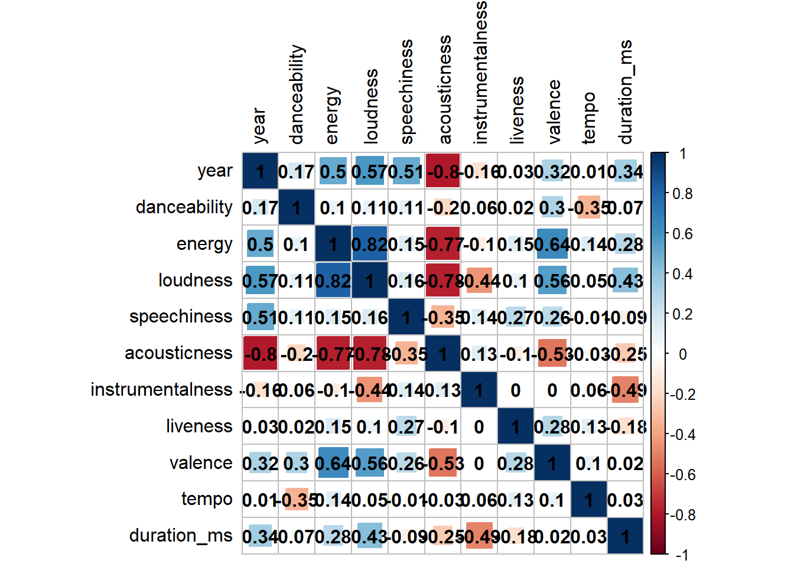
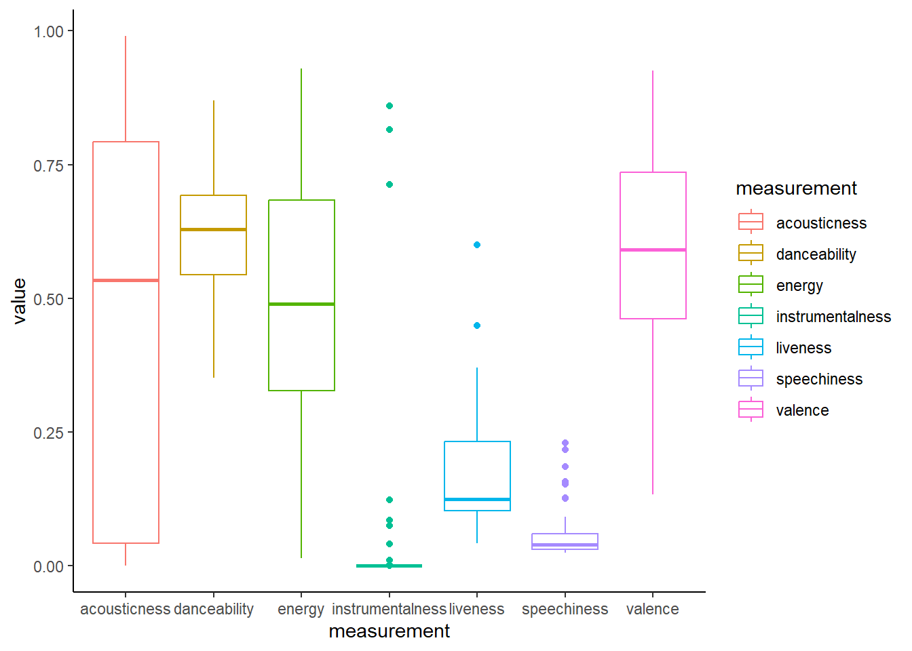

# パッケージ読み込み
pacman::p_load(spotifyr, tidyverse,
corrplot, # 相関行列表を出力したい
gt) # 表を綺麗に出力したい
# API取得
Sys.setenv(SPOTIFY_CLIENT_ID = "xxxxxxxxxxxxxxxxxxxxx")
Sys.setenv(SPOTIFY_CLIENT_SECRET = "xxxxxxxxxxxxxxxxxxxxx")
access_token <- get_spotify_access_token()星野源のアルバム楽曲を分析してみる
はじめに
RでSpotify分析やってみる初回。 何ができるかを確かめつつ、星野源のアルバム楽曲の数値を可視化してみる。
準備
ライブラリ読み込みとAPI取得について、以下のコードの説明はこちらから。
楽曲情報取得
get_artist_audio_features関数を使って、アーティストの楽曲情報を取りに行く。引数にはアーティスト名もしくはアーティストIDを入れる。
gen <- get_artist_audio_features("Gen Hoshino")
アーティストIDはどこ
SpotifyのアーティストページのURLのうち artist/XXXXXX?si= の部分をコピペ
最初4行だけ確認してみるとちゃんと星野源の楽曲情報が取れています。最新が上に表示されるのね。EPやシングルは含まれていません。
head(gen, 4) artist_name artist_id album_id album_type
1 Gen Hoshino 1S2S00lgLYLGHWA44qGEUs 2GP1RmB0LvvuXOwOmrtG86 album
2 Gen Hoshino 1S2S00lgLYLGHWA44qGEUs 2GP1RmB0LvvuXOwOmrtG86 album
3 Gen Hoshino 1S2S00lgLYLGHWA44qGEUs 2GP1RmB0LvvuXOwOmrtG86 album
4 Gen Hoshino 1S2S00lgLYLGHWA44qGEUs 2GP1RmB0LvvuXOwOmrtG86 album
album_images
1 640, 300, 64, https://i.scdn.co/image/ab67616d0000b27307831685d7f988332899529a, https://i.scdn.co/image/ab67616d00001e0207831685d7f988332899529a, https://i.scdn.co/image/ab67616d0000485107831685d7f988332899529a, 640, 300, 64
2 640, 300, 64, https://i.scdn.co/image/ab67616d0000b27307831685d7f988332899529a, https://i.scdn.co/image/ab67616d00001e0207831685d7f988332899529a, https://i.scdn.co/image/ab67616d0000485107831685d7f988332899529a, 640, 300, 64
3 640, 300, 64, https://i.scdn.co/image/ab67616d0000b27307831685d7f988332899529a, https://i.scdn.co/image/ab67616d00001e0207831685d7f988332899529a, https://i.scdn.co/image/ab67616d0000485107831685d7f988332899529a, 640, 300, 64
4 640, 300, 64, https://i.scdn.co/image/ab67616d0000b27307831685d7f988332899529a, https://i.scdn.co/image/ab67616d00001e0207831685d7f988332899529a, https://i.scdn.co/image/ab67616d0000485107831685d7f988332899529a, 640, 300, 64
album_release_date album_release_year album_release_date_precision
1 2018-12-19 2018 day
2 2018-12-19 2018 day
3 2018-12-19 2018 day
4 2018-12-19 2018 day
danceability energy key loudness mode speechiness acousticness
1 0.629 0.441 9 -4.614 1 0.1260 0.033900
2 0.598 0.819 9 -2.619 1 0.0911 0.000810
3 0.592 0.842 6 -3.914 1 0.0612 0.000328
4 0.450 0.769 9 -5.318 1 0.1860 0.004040
instrumentalness liveness valence tempo track_id
1 0.00e+00 0.2340 0.782 78.177 4hQ5tBCwPRkzhFB424U63U
2 0.00e+00 0.2180 0.878 158.115 1flvuaMS27JxpEBL0u2cWc
3 1.58e-06 0.1290 0.591 97.093 7cwzoU55oSCNP7m8dWDShQ
4 7.07e-05 0.0762 0.811 122.108 0YEjAa5T0NQwvB7uz1dJvW
analysis_url
1 https://api.spotify.com/v1/audio-analysis/4hQ5tBCwPRkzhFB424U63U
2 https://api.spotify.com/v1/audio-analysis/1flvuaMS27JxpEBL0u2cWc
3 https://api.spotify.com/v1/audio-analysis/7cwzoU55oSCNP7m8dWDShQ
4 https://api.spotify.com/v1/audio-analysis/0YEjAa5T0NQwvB7uz1dJvW
time_signature
1 4
2 4
3 4
4 4
artists
1 https://api.spotify.com/v1/artists/1S2S00lgLYLGHWA44qGEUs, 1S2S00lgLYLGHWA44qGEUs, Gen Hoshino, artist, spotify:artist:1S2S00lgLYLGHWA44qGEUs, https://open.spotify.com/artist/1S2S00lgLYLGHWA44qGEUs
2 https://api.spotify.com/v1/artists/1S2S00lgLYLGHWA44qGEUs, 1S2S00lgLYLGHWA44qGEUs, Gen Hoshino, artist, spotify:artist:1S2S00lgLYLGHWA44qGEUs, https://open.spotify.com/artist/1S2S00lgLYLGHWA44qGEUs
3 https://api.spotify.com/v1/artists/1S2S00lgLYLGHWA44qGEUs, 1S2S00lgLYLGHWA44qGEUs, Gen Hoshino, artist, spotify:artist:1S2S00lgLYLGHWA44qGEUs, https://open.spotify.com/artist/1S2S00lgLYLGHWA44qGEUs
4 https://api.spotify.com/v1/artists/1S2S00lgLYLGHWA44qGEUs, 1S2S00lgLYLGHWA44qGEUs, Gen Hoshino, artist, spotify:artist:1S2S00lgLYLGHWA44qGEUs, https://open.spotify.com/artist/1S2S00lgLYLGHWA44qGEUs
available_markets disc_number duration_ms explicit
1 JP 1 182000 FALSE
2 JP 1 251266 FALSE
3 JP 1 187000 FALSE
4 JP 1 239933 FALSE
track_href is_local track_name
1 https://api.spotify.com/v1/tracks/4hQ5tBCwPRkzhFB424U63U FALSE Pop Virus
2 https://api.spotify.com/v1/tracks/1flvuaMS27JxpEBL0u2cWc FALSE 恋
3 https://api.spotify.com/v1/tracks/7cwzoU55oSCNP7m8dWDShQ FALSE Get a Feel
4 https://api.spotify.com/v1/tracks/0YEjAa5T0NQwvB7uz1dJvW FALSE 肌
track_preview_url
1 https://p.scdn.co/mp3-preview/aac3bbc9cc1adfbf483c6e8944db788e9e4452b2?cid=44af3e1025034575bf0766d197d738e6
2 https://p.scdn.co/mp3-preview/8b681e4045fc31a9f7d6661e67988226cca7d839?cid=44af3e1025034575bf0766d197d738e6
3 https://p.scdn.co/mp3-preview/69e726a36a79bf9416eccdb21b4c92b662f2b37b?cid=44af3e1025034575bf0766d197d738e6
4 https://p.scdn.co/mp3-preview/96ce2d84c4b8ed943e73e8c8e3a24489cd796b8e?cid=44af3e1025034575bf0766d197d738e6
track_number type track_uri
1 1 track spotify:track:4hQ5tBCwPRkzhFB424U63U
2 2 track spotify:track:1flvuaMS27JxpEBL0u2cWc
3 3 track spotify:track:7cwzoU55oSCNP7m8dWDShQ
4 4 track spotify:track:0YEjAa5T0NQwvB7uz1dJvW
external_urls.spotify album_name key_name
1 https://open.spotify.com/track/4hQ5tBCwPRkzhFB424U63U POP VIRUS A
2 https://open.spotify.com/track/1flvuaMS27JxpEBL0u2cWc POP VIRUS A
3 https://open.spotify.com/track/7cwzoU55oSCNP7m8dWDShQ POP VIRUS F#
4 https://open.spotify.com/track/0YEjAa5T0NQwvB7uz1dJvW POP VIRUS A
mode_name key_mode
1 major A major
2 major A major
3 major F# major
4 major A major列が多すぎるので列名だけ見てみる。いろんなことできそう。
colnames(gen) [1] "artist_name" "artist_id"
[3] "album_id" "album_type"
[5] "album_images" "album_release_date"
[7] "album_release_year" "album_release_date_precision"
[9] "danceability" "energy"
[11] "key" "loudness"
[13] "mode" "speechiness"
[15] "acousticness" "instrumentalness"
[17] "liveness" "valence"
[19] "tempo" "track_id"
[21] "analysis_url" "time_signature"
[23] "artists" "available_markets"
[25] "disc_number" "duration_ms"
[27] "explicit" "track_href"
[29] "is_local" "track_name"
[31] "track_preview_url" "track_number"
[33] "type" "track_uri"
[35] "external_urls.spotify" "album_name"
[37] "key_name" "mode_name"
[39] "key_mode" 指標
分からなさそうな指標をChat GPTに聞いてみた。（間違っているかもしれない。）
danceability-
楽曲がどれだけ踊りやすいかを示します。0.0から1.0までの範囲で、1.0に近いほどダンサブルです。
energy-
楽曲の強度と活動量を示します。0.0から1.0までの範囲で、1.0に近いほどエネルギッシュです。
key-
楽曲の音楽的なキーを整数で表します。0（C）から11（B）までの範囲です。
loudness-
楽曲の平均音量をデシベル（dB）で表します。
mode-
楽曲のモードを示します。メジャー（1）かマイナー（0）です。
speechiness-
楽曲の中で言葉がどれだけ支配的かを示します。0.0から1.0までの範囲で、1.0に近いほどスピーチ（話し言葉）が多いです。
acousticness-
楽曲がどれだけアコースティックであるかを示します。0.0から1.0までの範囲で、1.0に近いほどアコースティックです。
instrumentalness-
楽曲がどれだけインストゥルメンタル（ボーカルがない）かを示します。0.0から1.0までの範囲で、1.0に近いほどインストゥルメンタルです。
liveness-
楽曲がどれだけライブ録音のように感じるかを示します。0.0から1.0までの範囲で、1.0に近いほどライブ感があります。
valence-
楽曲のポジティブさを示します。0.0から1.0までの範囲で、1.0に近いほどポジティブ（陽気）です。
tempo-
楽曲のテンポ（BPM：Beats Per Minute）を表します。
duration_ms-
楽曲の長さをミリ秒で表します。
使いそうな列だけ抽出する。
gen <- gen %>%
select(album_name, album_release_year, track_name,
danceability, energy, loudness, speechiness, acousticness, instrumentalness, liveness, valence,
tempo, duration_ms) %>%
rename(album = album_name,
year = album_release_year,
track = track_name) # 長いので略します
head(gen, 4) album year track danceability energy loudness speechiness
1 POP VIRUS 2018 Pop Virus 0.629 0.441 -4.614 0.1260
2 POP VIRUS 2018 恋 0.598 0.819 -2.619 0.0911
3 POP VIRUS 2018 Get a Feel 0.592 0.842 -3.914 0.0612
4 POP VIRUS 2018 肌 0.450 0.769 -5.318 0.1860
acousticness instrumentalness liveness valence tempo duration_ms
1 0.033900 0.00e+00 0.2340 0.782 78.177 182000
2 0.000810 0.00e+00 0.2180 0.878 158.115 251266
3 0.000328 1.58e-06 0.1290 0.591 97.093 187000
4 0.004040 7.07e-05 0.0762 0.811 122.108 239933分析
今回は「星野源のアルバム5枚の変遷を耳で知っているけど、それって数値にどう表れているんだろう？」を見てみたい。
星野源のこれまでのアルバム名と発売年
gen %>%
select(album, year) %>%
unique() %>% # 一意の値を抽出
arrange(year) %>%
gt() # 綺麗な表にする| album | year |
|---|---|
| ばかのうた | 2010 |
| エピソード | 2011 |
| Stranger | 2013 |
| YELLOW DANCER | 2015 |
| POP VIRUS | 2018 |
相関
とりあえずアルバム5枚全曲で指標の相関を見てみる。
gen %>%
select_if(is.numeric) %>% # 数値型の列のみ選択
cor(use = "pairwise.complete.obs") %>%
corrplot(tl.col="black", addCoef.col = "black", method = "square", shade.col = NA)
(見づらい。列数が多くても簡単に綺麗に見やすく相関行列表が出力される方法を模索中)
ざっくり感想
danceabilityとenergyって相関強くないんだしかも、
danceabilityとtempoって負の相関なんだ！？そういやダンスミュージックだからといってテンポが速いわけではないなtempoは、danceability以外とほとんど相関がないから、他のエネルギッシュとかポジティブさはテンポの要素を抜いた指標になっている？yearとloudnessは正の相関、yearとacousticnessは負の相関なので、昔の曲の方が静かでアコースティックな体感と合ってますね。yearとduration_msを見ると正の相関なので、最近の曲は短いって時流とは違う方向。
箱ひげ図
0 ~ 1の範囲を取る7指標の分布を見てみる。
gen %>%
pivot_longer(cols = c(danceability, energy, speechiness, acousticness, instrumentalness, liveness, valence), # 指標を1つの列に
names_to = "measurement") %>% # 列名を変える
ggplot(aes(x = measurement, y = value, colour = measurement)) +
geom_boxplot() +
theme_classic()
acousticnessは、ほぼ0からほぼ1まで分布が広い。初期アルバムのギター1本弾き語りに近い曲から、最新アルバムのばちばちダンスミュージックまであるのでこれが反映されていそう。一方、
danceabilityは案外幅が狭くて、弾き語り曲でも0.3くらいは持っているっぽい。energyとvalenceは幅広い分布が似ている。エネルギッシュと陽気の違いはなんだ。instrumentalnessで大きく外れている3曲は、インスト曲たち。それはそう。（デイジーお味噌汁、さようならのうみ、Nerd Strut）
danceabilityを見てみる
danceabilityが高い順トップ10を見てみる。
gen %>%
arrange(desc(danceability)) %>% # desc(降順)で並べる
select(album, year, track, danceability) %>%
head(10) %>%
gt()| album | year | track | danceability |
|---|---|---|---|
| YELLOW DANCER | 2015 | 桜の森 | 0.870 |
| YELLOW DANCER | 2015 | Snow Men | 0.843 |
| POP VIRUS | 2018 | KIDS | 0.842 |
| YELLOW DANCER | 2015 | Nerd Strut (Instrumental) | 0.834 |
| YELLOW DANCER | 2015 | Down Town | 0.829 |
| エピソード | 2011 | 湯気 | 0.816 |
| POP VIRUS | 2018 | Pair Dancer | 0.807 |
| エピソード | 2011 | ストーブ | 0.797 |
| YELLOW DANCER | 2015 | SUN | 0.782 |
| POP VIRUS | 2018 | サピエンス | 0.781 |
桜の森が堂々1位で嬉しくなりました。他には、Sonow Men、Down Town、湯気あたり、納得の布陣。KIDSやストーブはちょっと意外。
コードのコピペも面倒なので、引数に指標名を入れたら上位/下位10曲を表で出力する関数を作ってみます。
# 上位10曲
top10 <- function(measurement){
gen %>%
arrange(desc(!!sym(measurement))) %>% #降順
select(album, year, track, !!sym(measurement)) %>% # アルバム名、年、曲名と指定した指標を残す
head(10) %>%
gt()
}
# 下位10曲
bottom10 <- function(measurement){
gen %>%
arrange(!!sym(measurement)) %>% # 昇順
select(album, year, track, !!sym(measurement)) %>%
head(10) %>%
gt()
}!!sym()ってなんだ
今回の関数では、引数に指定した文字列を変数名として使いたくて!!sym()というおまじないをつけました。通常、R上で"で囲まれたものは文字列として認識されますが、どうやらrlangによって、クオーテーション"があるなしと変数の行き来ができるみたいです。
かなり複雑で、あまり分かっていません。勉強したい。
ということで下位10曲はこちら。
bottom10("danceability") # 関数の引数指定は"文字列"で| album | year | track | danceability |
|---|---|---|---|
| ばかのうた | 2010 | 老夫婦 | 0.352 |
| ばかのうた | 2010 | ばかのうた | 0.366 |
| Stranger | 2013 | 季節 | 0.396 |
| Stranger | 2013 | ワークソング | 0.413 |
| ばかのうた | 2010 | ただいま | 0.443 |
| エピソード | 2011 | エピソード | 0.444 |
| ばかのうた | 2010 | さようならのうみ (Instrumental) | 0.444 |
| POP VIRUS | 2018 | 肌 | 0.450 |
| Stranger | 2013 | レコードノイズ | 0.472 |
| POP VIRUS | 2018 | アイデア | 0.478 |
個人的に肌は踊り曲だと思っていた。トップ10より古い年代のものが入ってますね、割と納得。
energyを見てみる
上位10曲はこちら。
top10("energy")| album | year | track | energy |
|---|---|---|---|
| YELLOW DANCER | 2015 | Crazy Crazy | 0.930 |
| YELLOW DANCER | 2015 | 地獄でなぜ悪い | 0.894 |
| POP VIRUS | 2018 | Hello Song | 0.887 |
| POP VIRUS | 2018 | Continues | 0.884 |
| Stranger | 2013 | 化物 | 0.858 |
| POP VIRUS | 2018 | Present | 0.848 |
| Stranger | 2013 | 夢の外へ | 0.848 |
| POP VIRUS | 2018 | Get a Feel | 0.842 |
| POP VIRUS | 2018 | 恋 | 0.819 |
| POP VIRUS | 2018 | Family Song | 0.776 |
とても納得。テンポ速そうなイメージの曲が多いけど、Continuesなど、案外速すぎずしっかり踏みしめる曲って感じ。そういや恋も特別速くはない。 Presentは少し意外だけど、ホーン隊もコーラスもがっつりでR&Bっぽい感じがエネルギッシュなのかしら。
下位10曲はこちら。
bottom10("energy")| album | year | track | energy |
|---|---|---|---|
| エピソード | 2011 | バイト | 0.0145 |
| YELLOW DANCER | 2015 | 口づけ | 0.0200 |
| ばかのうた | 2010 | さようならのうみ (Instrumental) | 0.0435 |
| Stranger | 2013 | Stranger | 0.0668 |
| エピソード | 2011 | エピソード | 0.0680 |
| YELLOW DANCER | 2015 | 夜 | 0.0797 |
| Stranger | 2013 | スカート | 0.1200 |
| エピソード | 2011 | ストーブ | 0.2060 |
| エピソード | 2011 | 布団 | 0.2180 |
| ばかのうた | 2010 | ばらばら | 0.2490 |
箱ひげ図でも分布の幅が広いなと思っていたけど、1位のCrazy Crazyが0.93のところ、下位6曲は0.1を切っている。
こちらも納得の布陣。初期曲や、ポップなアルバムの中の休み曲（口づけ、夜）という感じ。個人的にはYELLOW DANCERのアルバム曲順のバランス、とてもお気に入り。高校受験期に擦り切れるほど聴いた。
valenceを見てみる
energyと近いんじゃないかと予想している。
top10("valence")| album | year | track | valence |
|---|---|---|---|
| YELLOW DANCER | 2015 | 桜の森 | 0.926 |
| Stranger | 2013 | 夢の外へ | 0.908 |
| YELLOW DANCER | 2015 | Soul | 0.902 |
| Stranger | 2013 | 化物 | 0.899 |
| YELLOW DANCER | 2015 | 地獄でなぜ悪い | 0.892 |
| POP VIRUS | 2018 | Hello Song | 0.889 |
| POP VIRUS | 2018 | 恋 | 0.878 |
| ばかのうた | 2010 | 穴を掘る | 0.874 |
| ばかのうた | 2010 | 兄妹 | 0.866 |
| YELLOW DANCER | 2015 | SUN | 0.858 |
たしかに上位5/10曲が被っている。1stアルバムの穴を掘ると兄妹は意外。ただ、曲を改めて聴いてみると陽の気は感じる。
bottom10("valence")| album | year | track | valence |
|---|---|---|---|
| YELLOW DANCER | 2015 | 夜 | 0.133 |
| POP VIRUS | 2018 | Nothing | 0.186 |
| エピソード | 2011 | 未来 | 0.255 |
| ばかのうた | 2010 | 老夫婦 | 0.256 |
| ばかのうた | 2010 | ばかのうた | 0.259 |
| ばかのうた | 2010 | ひらめき | 0.289 |
| Stranger | 2013 | レコードノイズ | 0.324 |
| YELLOW DANCER | 2015 | ミスユー | 0.328 |
| Stranger | 2013 | 知らない | 0.339 |
| ばかのうた | 2010 | 夜中唄 | 0.351 |
下位曲はenergyと指標と被っていない。「昔は暗い曲ばっかりだった」と本人が言っていたのと合っている。私は全く分からないけど、曲の調と関係しているのかも？
acousticnessを見てみる
これはさすがに分かりやすい気がする。
top10("acousticness")| album | year | track | acousticness |
|---|---|---|---|
| ばかのうた | 2010 | さようならのうみ (Instrumental) | 0.990 |
| ばかのうた | 2010 | デイジーお味噌汁 (Instrumental) | 0.974 |
| YELLOW DANCER | 2015 | 夜 | 0.971 |
| YELLOW DANCER | 2015 | 口づけ | 0.927 |
| エピソード | 2011 | エピソード | 0.910 |
| ばかのうた | 2010 | ばらばら | 0.885 |
| ばかのうた | 2010 | ひらめき | 0.881 |
| エピソード | 2011 | バイト | 0.880 |
| Stranger | 2013 | スカート | 0.877 |
| ばかのうた | 2010 | 子供 | 0.871 |
初期曲が多め。数値も高め。試しにacousticnessが0.8より大きい曲を見てみる。
gen %>%
filter(acousticness > 0.8) %>%
select(album, year, track, acousticness) %>%
gt()| album | year | track | acousticness |
|---|---|---|---|
| YELLOW DANCER | 2015 | 口づけ | 0.927 |
| YELLOW DANCER | 2015 | 夜 | 0.971 |
| Stranger | 2013 | スカート | 0.877 |
| エピソード | 2011 | エピソード | 0.910 |
| エピソード | 2011 | くだらないの中に | 0.819 |
| エピソード | 2011 | 布団 | 0.836 |
| エピソード | 2011 | バイト | 0.880 |
| エピソード | 2011 | ストーブ | 0.859 |
| ばかのうた | 2010 | ばらばら | 0.885 |
| ばかのうた | 2010 | キッチン | 0.812 |
| ばかのうた | 2010 | デイジーお味噌汁 (Instrumental) | 0.974 |
| ばかのうた | 2010 | 子供 | 0.871 |
| ばかのうた | 2010 | さようならのうみ (Instrumental) | 0.990 |
| ばかのうた | 2010 | ひらめき | 0.881 |
| ばかのうた | 2010 | ばかのうた | 0.846 |
1stアルバムばかのうたと2ndアルバムエピソードからが多い。初期アルバムの数曲やシングルのカップリングから試していたポップさが、3rdアルバムStrangerから （厳密には2ndアルバム後のシングルフィルムと夢の外へから）だんだんと増えて今の星野源になっている感じが分かる。
ちなみに下位10曲。
bottom10("acousticness")| album | year | track | acousticness |
|---|---|---|---|
| POP VIRUS | 2018 | Hello Song | 0.000209 |
| POP VIRUS | 2018 | Get a Feel | 0.000328 |
| POP VIRUS | 2018 | 恋 | 0.000810 |
| POP VIRUS | 2018 | アイデア | 0.001970 |
| POP VIRUS | 2018 | 肌 | 0.004040 |
| YELLOW DANCER | 2015 | Nerd Strut (Instrumental) | 0.006970 |
| POP VIRUS | 2018 | Family Song | 0.007880 |
| YELLOW DANCER | 2015 | Friend Ship | 0.010500 |
| POP VIRUS | 2018 | Present | 0.012600 |
| POP VIRUS | 2018 | Nothing | 0.017300 |
アルバムの並びがちゃんと上位10曲の裏返しになっている。acousticnessが0.1より小さい曲を見てみる。
gen %>%
filter(acousticness < 0.1) %>%
select(album, year, track, acousticness) %>%
gt()| album | year | track | acousticness |
|---|---|---|---|
| POP VIRUS | 2018 | Pop Virus | 0.033900 |
| POP VIRUS | 2018 | 恋 | 0.000810 |
| POP VIRUS | 2018 | Get a Feel | 0.000328 |
| POP VIRUS | 2018 | 肌 | 0.004040 |
| POP VIRUS | 2018 | Pair Dancer | 0.034600 |
| POP VIRUS | 2018 | Present | 0.012600 |
| POP VIRUS | 2018 | Dead Leaf | 0.041500 |
| POP VIRUS | 2018 | Continues | 0.018600 |
| POP VIRUS | 2018 | サピエンス | 0.076300 |
| POP VIRUS | 2018 | アイデア | 0.001970 |
| POP VIRUS | 2018 | Family Song | 0.007880 |
| POP VIRUS | 2018 | Nothing | 0.017300 |
| POP VIRUS | 2018 | Hello Song | 0.000209 |
| YELLOW DANCER | 2015 | 時よ | 0.022400 |
| YELLOW DANCER | 2015 | Week End | 0.042600 |
| YELLOW DANCER | 2015 | SUN | 0.021000 |
| YELLOW DANCER | 2015 | Nerd Strut (Instrumental) | 0.006970 |
| YELLOW DANCER | 2015 | Down Town | 0.022700 |
| YELLOW DANCER | 2015 | Friend Ship | 0.010500 |
| Stranger | 2013 | 知らない | 0.060200 |
3rdアルバムの知らないが一番高くて0.06で、それ以外は全て4thアルバムYELLOW DANCERと5thアルバムPOP VIRUSの曲たち。系統がガラッと変わっていることが分かる。
おわりに
もう少しできそうだけどここまでにします。
初回なので指標を見つつ、自分が曲を聴いてきた感覚と数値を答え合わせする回でした。星野源曲を聴きながら作業するの楽しかった。まだまだできる。
今後は、アルバム曲以外も含めたり、大好きカップリング曲に焦点を当てたり、主成分分析（できるかな）もしてみたい。
最新アルバムPOP VIRUSが発売されて6年（！？）、ワールドツアーとコロナ禍を経て、音楽の聴かれ方も、作曲方法も変わってまた進化しているので、最近の曲も見てみたいところ。次のアルバムが発売される時にはどんな曲がどんな曲順で入るんだろうと考えるのが楽しいです。
曲名やアルバム名にはリンクを貼っているのでぜひ聴いてみてください。